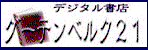

|
リンクを張っていただいたみなさん、ありがとうございます。 最近メールを頂く数が多くなってお礼の返事が書けていません。本当にすみません。 でも、リンクを張っていただけるのは、とても嬉しいです。今後ともよろしくお願いいたします。 ●岐阜大学佐藤貴裕さんのページ まっさきにリンクを張っていただいたのが佐藤さんです。『小公子』の電子テキストもあります。 ●ポシブル堂書店さんのページ 「すべての個人出版・電子出版を応援する電子本の百貨店」をキャッチフレーズに、送り手（作者）と受け手（読者）のコミュニケーション広場を目指すオンライン書店です。 ●猫乃電子出版さんのページ 田辺浩昭さんによる、新潟発の小さな電子個人出版社。電子本の制作、販売、紹介を一手に引き受けます。 ●ノベルズワールドさんのページ オンライン作家と読者の集うページです。広く作品を募り、批評や感想を寄せ合うことで、より高い創作の世界を目指しています。 ●鈴木志郎康さんのページ 青空文庫に作品を登録していただいている鈴木志郎康さんのページです。 ●山本光夫さんのページ 青空文庫に作品を登録していただいている山本光夫さんのページです。森田芳光監督の「失楽園」に出てくるタイルアートは山本さんの作品です。 ●記紀（kiki）文庫さんのページ 青空文庫に作品を登録していただいている記紀（kiki）文庫さんのページです。 ●徳永真一さんのページ 青空文庫に作品を登録していただいている徳永真一さんのページです。 ●「本と出版流通」さんのページ 本と出版流通に関するページです。トップに青空文庫のリンクを置いてもらっています。 ●＊ＺＩＮＥ−ＣＬＩＰ（ジーン・クリップ）さんのページ オンライン雑誌の最新更新情報を「最新主要見出し」と共に掲載、毎日更新しているページです。青空文庫も載せていただいております。 ●ひこ・田中さんのページ 「お引越し」などで有名な作家のひこ・田中さんのページです。 ●今泉修さんのページ バトミントンに」関するページです。 ●堀之内修さんのページ 「これからの電子出版」を考えられている堀之内修さんのページです。堀之内さんを通じて視覚障碍者読書支援協会の方々と知り合えました。 ●視覚障碍者読書支援協会さんのページ 「青空文庫工作員マニュアル」作成には、視覚障碍者読書支援協会さんの入力マニュアルが大変参考になりました。 ●学習情報図書館さんのページ 東京工業大学が行っている子供のための教材データーベースです。 ●ＪＣＣ日本電算機さんのページ インターネット端末「ｉＢＯＸ」を発売されている会社です。 ●「ジパング」さんのページ 「ジパング」さんは、サンフランシスコ・ベイエリアでコンピュータを日本語で快適に使用することを目指すボランティア・グループです。 ●「CometML」さんのページ 青少年問題を扱うページです。 ●松浦誠二さんのページ いろいろ総合的な情報ページです。 ●新城宏さんのページ 詩やエッセイなどを載せていらっしゃる新城宏さんのページです。 ●私立ＰＤＤ図書館さんのページ 電子テキストを掲載していらっしゃる獨澄旻さんのページです。 ●「HOKKAIDO BOOK NAVIGATOR」さんのページ 北海道内の書店検索、書籍・雑誌の検索と紹介等を行っているページです。 ●「Cafe de arisu」さんのページ 短編小説などを発表されているyuasaさんのページです。 ●平田昇治さんのページ デジタル時代の組版術を考えていらっしゃる平田昇治さんのページです。 ●障害者情報ネットワーク「ノーマネット」さんのページ 障害者関連団体の中心ホームページです。でも「青空文庫」って、あいうえお順で並ぶとトップに並ぶ確率が高いんですね。 ●入谷芳彰さんのページ 青空文庫に作品を登録していただいている入谷芳彰さんのページです。 ●藤堂尚夫さんのページ 仁愛女子高校で国語を教えていらっしゃる藤堂尚夫さんのページです。藤堂尚夫さんによる芥川龍之介「芋粥」小論などもお読みいただけます。 ●「めいろの森」さんのページ おかあさんとお子さんが一緒にみるホームページです。 ●「有機農業・環境問題のホームページ」さんのページ 神戸市を中心に有機農産物の共同購入をしている「求める会」と、有機農産物を生産している農家や消費者グループの集まりである「兵庫県有機農業研究会」の活動や話題を中心とした、有機農業・ゴミ問題やダイオキシン問題、農薬や食品添加物などを考えるホームページです。 ●フューチャーネットワークさんのページ 仕事や生活に役立つページや子供が楽しめるページを集めてあるリンク集です。キーワードで検索を行うことができます。 ●鈴木厚司さんのページ「At Channel」 九鬼周造著『いきの構造』のテキストを入力されている鈴木厚司さんのページです。 ●大阪書籍株式会社さんのページ 大阪書籍株式会社さんは、小・中・高等学校の教科書を発行している会社です。全国の小・中・高等学校の先生方に資料を提供するために、ホームページが４月より本格的に開設されます。 ●BOOK MATEさんのページ インターネット上に、本の好きな人の憩いの場を作ろうとしている嶋崎鉄兵さんのページです。 ●長谷川集平さんのページ 絵本作家であり、ミュージシャンでもある長谷川集平さんのページです。 ●たけくらべ検索 「青空文庫」にアップされている樋口一葉の『たけくらべ』を使って、全文検索できるコーナーを名桜大学の波平さんが作ってくれました。 ●栗原裕一さんのページ 中学校で国語を教えていらっしゃる栗原裕一さんのページです。 ●村山元紀さんのページ 村山元紀さんのパーソナルなページです。 ●こねっとワールドさんのページ インターネット上にある教育上有益なページを集めた検索ページです。 ●森田たまホームページ 青空文庫のテキスト入力にご協力いただいている小林徹さんが作られているページです。 ●あかねホームルーム 国語を勉強するオンライン学習塾です。青空文庫の森鴎外「舞姫」などをご利用いただいています。 ●「著作権フォーラム」のページ 「著作権」というキーワードを中心として、現代社会の情報・コミュニケーションを考えるページです。 ●豊田ひろしさんのページ 豊田ひろしさんの個人的なページ。命拾いをした飛行機事故の体験記録などがあります。 ●東京情報大学総合情報センターさんのページ 千葉市にある東京情報大学の図書館、総合情報センターさんのページです。 ●高橋陽道さんのページ 私立東京高校に在学中の高橋陽道さんの個人的なホームページです。 ●株式会社ササガワ（タカ印紙製品）さんのページ いろいろ生活に関連したページのリンク集です。 ●辻良啓さんのページ 「四日市の史跡」という三重県四日市市の史跡・郷土史を紹介しているページです。 ●電網和室すとんさんのページ インターネット上にある、日本語（国語）・国文学・国語教育関係の ページのリンク集です。 ●ミステリ・クラブホームページのオバカサイドさんのページ 立教大学ミステリ・クラブのオバカサイドの代表、千田純也さんの個人的趣味のページです。 ●万仲龍樹さんのページ 万仲龍樹さんの個人的なページです。 ●柳沢成雄さんのページ 校正のお手伝いもしていただいている柳沢成雄さんのページです。 ●山岡未明さんのページ 山岡さんが作られた絵本などを見ることができます。 ●ほら貝さんのページ 文字コードの問題など興味のある方は、このページをぜひご覧下さい。 ●櫻さんのページ 櫻さんは、詩や俳句など紹介するというスタンスで毎日日記を書いておられます。 ●Divoさんのページ MULTIMEDIA CONVENIENCE DiVO 電子本もいっぱい！ ●篠原凛さんのページ 篠原凛さんの詩や小説のページです。 ●「ミステリ帝国」さんのページ 帝王ことHIDEさんが運営するミステリ（とくに文庫）に関するページです。 ●JAMN（じゃみん）さんのページ 音楽ファンのためのホームページです。音楽ソフトのカタログ検索からショッピングまでできます。 ●「リズムたうん」さんのページ JAMN（じゃみん）さんのページも含めて、色々なリンクページです。 ●熊本大学附属図書館さんのページ 旧藩主細川家所蔵の旧記録・古文書よりなる財団法人「永青文庫」架蔵史料があります。 ●「岩本宣明の時空ノート」さんのページ 戯曲「新聞記者」を書かれた岩本宣明さんのファンクラブによるホームページです。 ●「ながの情報」さんのページ ながの情報ホームページは長野のタウン情報誌が発信する長野の情報です。 ●「うさぎ屋本舗」さんのページ 作家兼業主婦・妹尾ゆふ子さんのページです。妹尾ゆふ子さんの短編小説をエキスパンドブックなどで読むことができます。 ●「埼玉県高等学校国語科教育研究会」さんのページ 埼玉県高等学校国語科教育研究会は埼玉県の国立・公立・私立の高等学校国語科教員で構成している組織です。 ●「キヤノン株式会社ＢＪプリンタ」さんのページ みなさん御存知のキャノン・ＢＪプリンタのページです。 ●「NTT OCN事業部」さんのページ 「青空文庫」の置いてあるボイジャーのサーバーもOCNを使用しています。そのOCNさんのページです。 ●「大仁中学校／小学校」さんのページ 静岡県田方郡大仁町にある、大仁中学校／小学校さんページです。 ●「書籍デジタル化委員会」さんのページ 電子化書籍の普及をめざして開設されたページです。 ●「Nursery Rhymes Garage」さんのページ マザーグースに関するプライベート・ページです。 マザーグースの歌が 555 編掲載され検索できるようになっています。 ●「オオコシ通商」さんのページ 福島県郡山市にあるオオコシ通商さんは、福島県内の求人広告を発行されています。 ●山根鋭二さんのページ 青空文庫でテキスト入力のお手伝いをしていただいている山根鋭二さんのページのページです。  ●「グーテンベルク21」さんのページ 東西の古典を中心に配布している書店です。 ●「愛育園＆愛育ソフト」さんのページ 有田みかんと聖書と教育ソフトが一体となっているページです。 ●Usukeさんのページ Usukeさんが開いている文学ファンのためのページです。 ●「（財）香川情報化推進機構」さんのページ 香川県の情報をいろいろと見ることが出来るページです。 ●「ＮＪＫシステム株式会社」さんのページ 札幌にあるコンピュータのソフト会社「ＮＪＫシステム」さんのページです。 ●「大好きマザーグース」さんのページ 映画や児童文学の中で引用されているマザーグースを紹介したホーム ページです。 ●「SURREALITY」さんのページ 文学と神秘主義のページです。３Ｄのギャラリーもあります。 ●足立智美さんのページ 音楽家である足立智美さんのページです。 ●「城西大学水田記念図書館」さんのページ 埼玉県坂戸市にある城西大学水田記念図書館さんのページです。 ●「財団法人国際学友会」さんのページ 国際学友会さんは、日本に留学している人たち向けに、交流事業や進学予備教育のための日本語教育などをおこなっている、文部省所轄の公益法人です。 ●伊藤敏さんのページ 伊藤敏さんは、インターネットを教育に活かす試みとして「マルチメディア教材検索システム」を開設しています。「国語」や「文学」で検索すると青空文庫が出てきます。 ●「核融合科学研究所」さんのページ 核融合科学研究所が開いている図書ホームページです。主に科学関係の文献が検索できます。 ●「宮沢賢治の宇宙」さんのページ 宮沢賢治事典などのページがあって、宮沢賢治のより細かな情報を得られるページです。 ●柴田雅生さんのページ 電子化されたテキストのあるサイトへのリンク集です。 ●「ゲートシティ大崎」さんのページ 今話題のゲートシティ大崎のホームページです。大崎も変わったものですね。 ●「雪の下」さんのページ 秦功一さんが書かれた卒業論文「プロレタリア文学運動論考」などを読むことができます。 ●「桐高読書ノート」さんのページ 群馬県立桐生高校の小島努さんが開かれているページです。 ●「昼夜積読乱読期」さんのページ Kayakさんが開かれている「本」や「読書」に関するページです。 ●「AT&T Jens株式会社」さんのページ プロバイダーの「AT&T Jens」さんが開いている本に関するページです。 ●野口裕さんのページ 野口裕さんの本当の意味のホームページです。 ●「下妻市立上妻小学校」さんのページ 下妻市はどこにあるかと言うと茨城県にあります。 ●「八方美人な書評ページ」さんのページ 「読んだ本はどんなものであろうと必ず評価する」と誓った八方美人男さんのページです。 ●「Will Way Creation」さんのページ SOHO型ワークスタイルのをトータルに支援するWill Wayさんのページです。 ●「Studio Tatu」さんのページ 「３Ｄ研究室」「小説批評会」「哲学思索館」などのコーナーがあります。 ●"Childhoods_end" 山本佳史さんの個人的なページです。 |
|
|
| トップページへ みずたまり そらもよう |